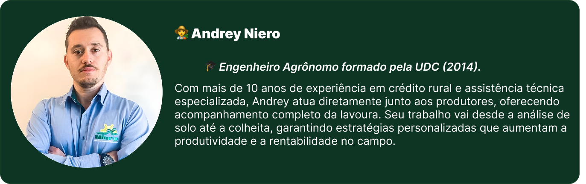
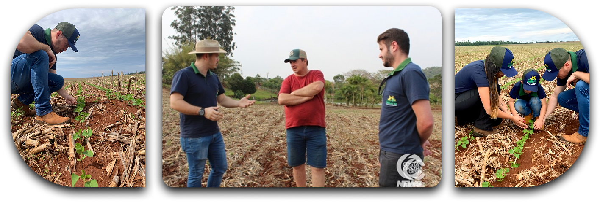

A Niero Planejamentos é uma empresa especializada em assistencia
técnica e planejamnto agrícola, com foco em soluções personalizadas
para o produtor rural. Atuamos com compromisso, seriedade e
resonsabilidade, entregando resultados práticos e sutentáveis no
campo. Nosso objetivo é unir conhecimentos técnicos, experiência e
inovação para transformar a realidade do agronegócio regional.


Niero Assessoria
Rua Vanio Ghellere n° 25, São Miguel do Iguaçu
CNPJ: 24.365.288/0001-66
CEP: 85877-000